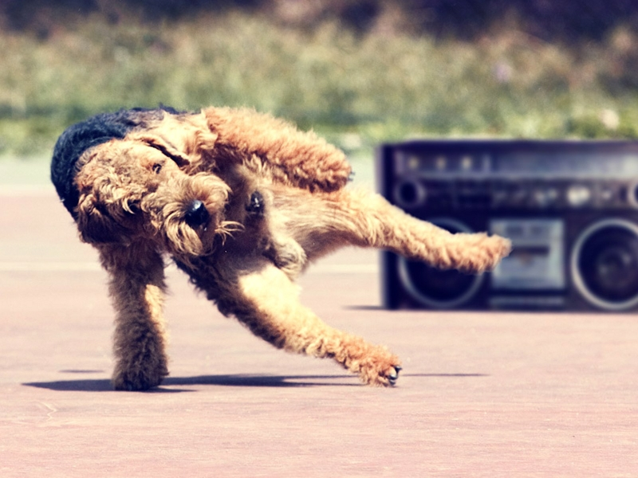

The Airedale Terrier is the largest of the Terriers and were mainly used in England to catch rats and otters. They first originated in the Aire Valley in Yorkshire. They are loyal dogs who need attention and a large space to run around in. They are friendly and protective of their owners.
Males can be 24 inches tall and weigh up to 65 pounds. Females can be 23 inches tall and weigh up to 55 pounds.
They can live for 10 to 12 years.